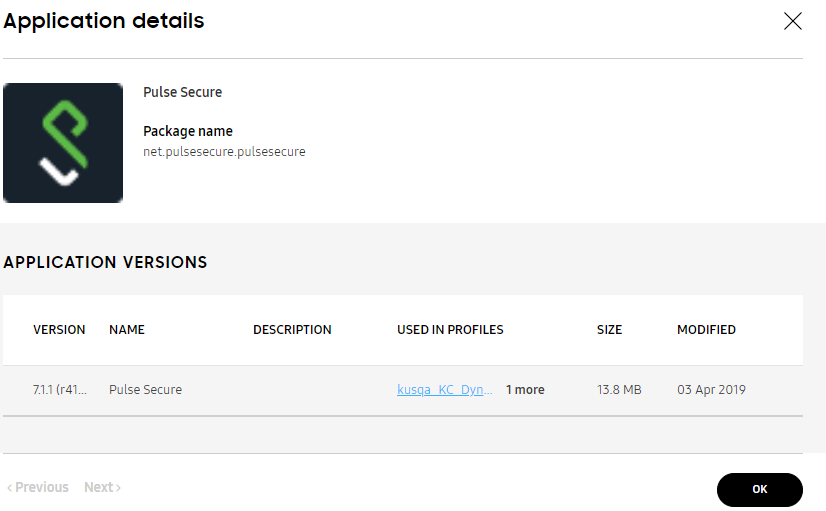
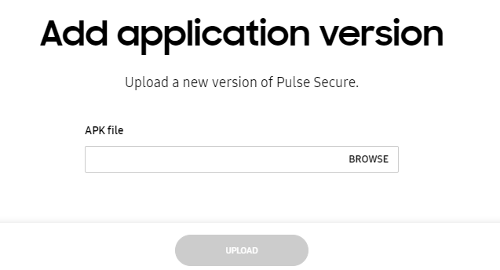

Upload an app
Last updated July 26th, 2023
You can add apps from Google Play as well as internal apps (APK files that you’ve uploaded directly to the console) to your library in Knox Configure. Apps in your library can be attached to a profile, which will automatically install them on any device assigned to that profile when the device is configured.
If your internal app uses the Knox SDK and requires a license, you can choose to attach one of your enterprise’s Knox licenses to the app for deployment.
Upload an internal app
- On the Knox Configure console, go to Library.
- Click ADD MOBILE APPLICATION.
- Click UPLOAD APPLICATION.
- Browse for the APK file on your file system and optionally provide a Description to help differentiate it from other apps.
- Click UPLOAD to upload the internal app.
Add an app from Google Play
-
On the Knox Configure console, go to Library.
-
Click ADD MOBILE APPLICATION.
-
Click ADD FROM GOOGLE PLAY.
-
Enter the Google Play URL and an optional Description.
Click ADD ANOTHER if you want to upload additional apps.
-
Click UPLOAD to add the Google Play app(s) to your library.
App versioning
Each app in your library displays its name, description, profile assignment, size, and date of last modification. If you have multiple versions of the same app, you can also see all the versions of the app listed separately. This allows you to check whether the most recent version of the app has been deployed.
When you upload a new version of an existing app and the signature is different than the signature of the existing app, then the upload is rejected with a console error message. However, if you upload a new version of an app with the same signature as the existing version, the upload is permitted.
To review app versioning information:
-
Open the MOBILE APPS or WEARABLE APPS tab.
-
Select a app to review its existing version information and determine how many versions of this app are available in Knox Configure.

-
In the VERSION column on the left of the screen, you can see whether the most recent version of the app is utilized with Knox Configure.
Note
If you want to upload a test version of an existing app, make sure you change the name of the app before you upload it to avoid versioning conflicts with the existing version.

-
BROWSE to the location of the target app’s APK file. Once located, select UPLOAD. The newly added app displays within the APPLICATION VERSIONS list within the Application details screen and is ready for use with a Knox Configure profile.
Is this page helpful?